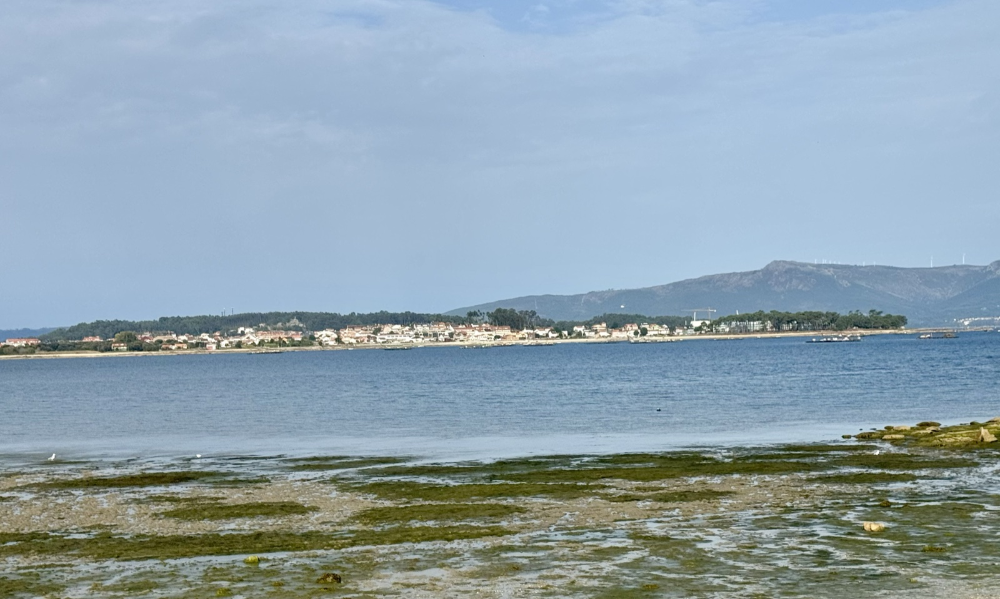
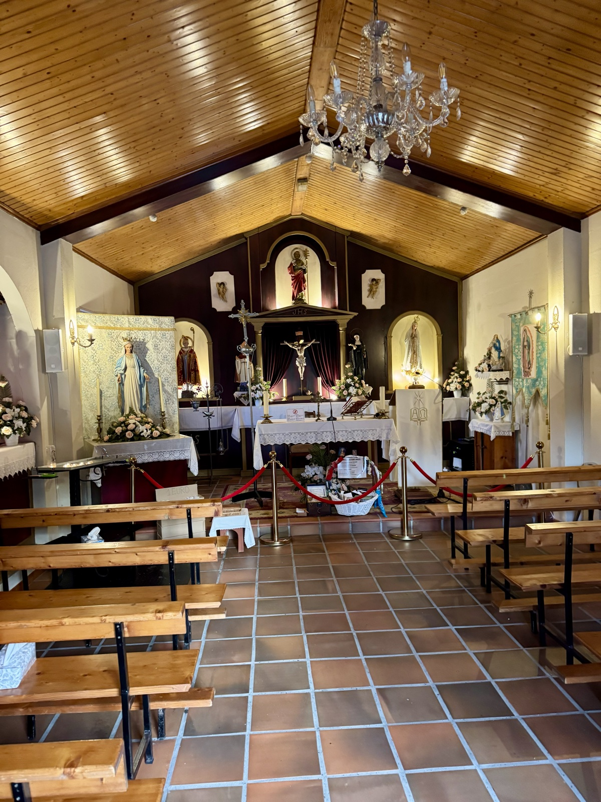
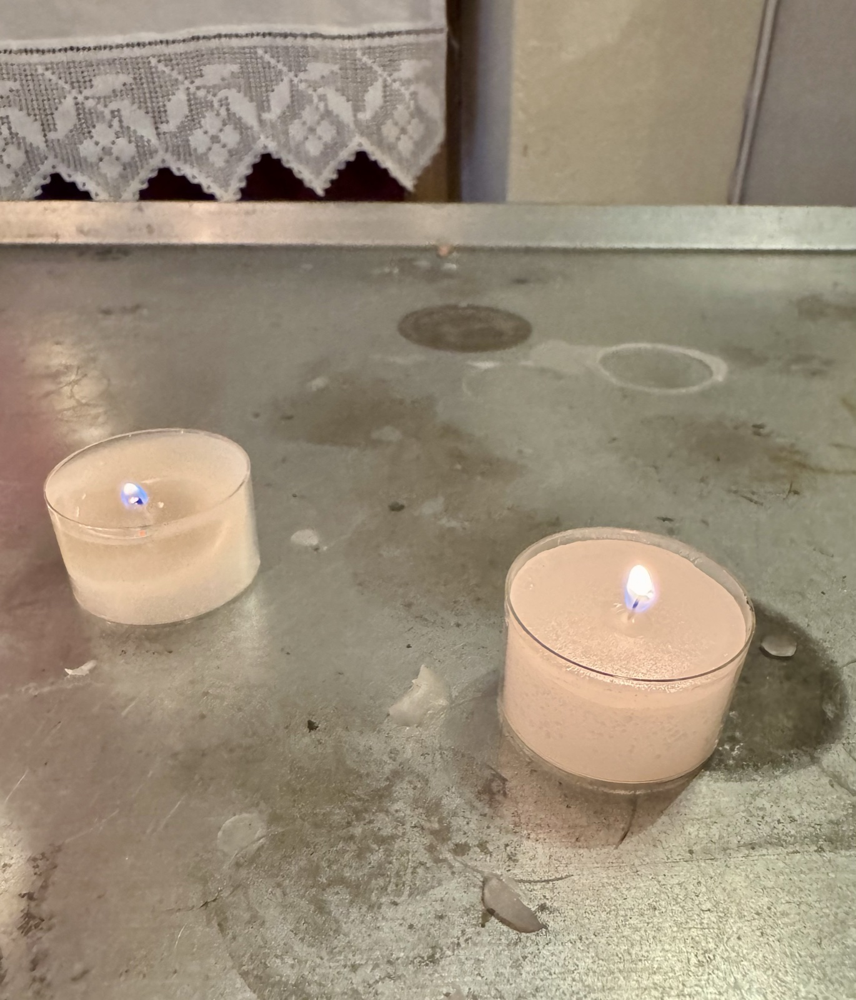
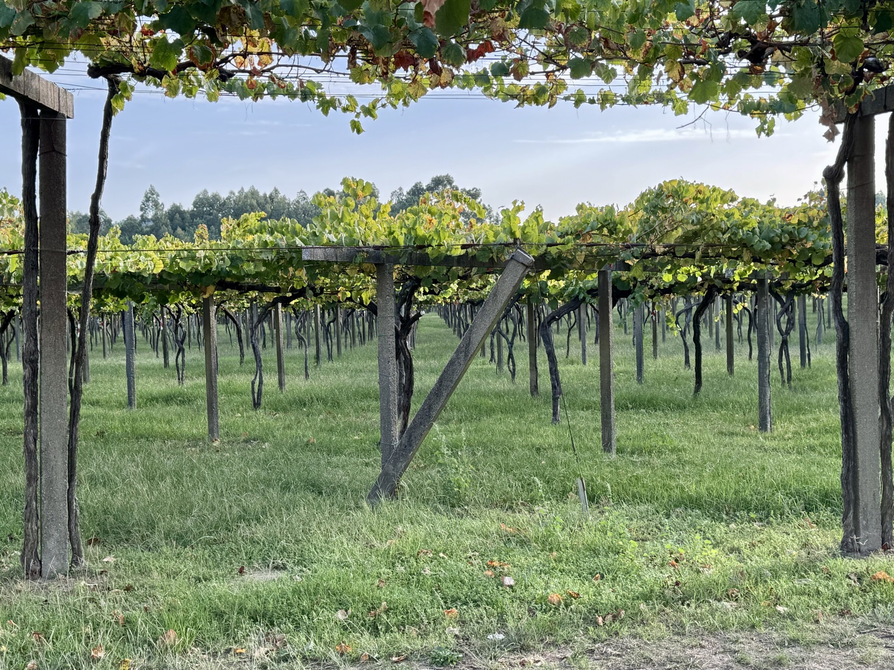
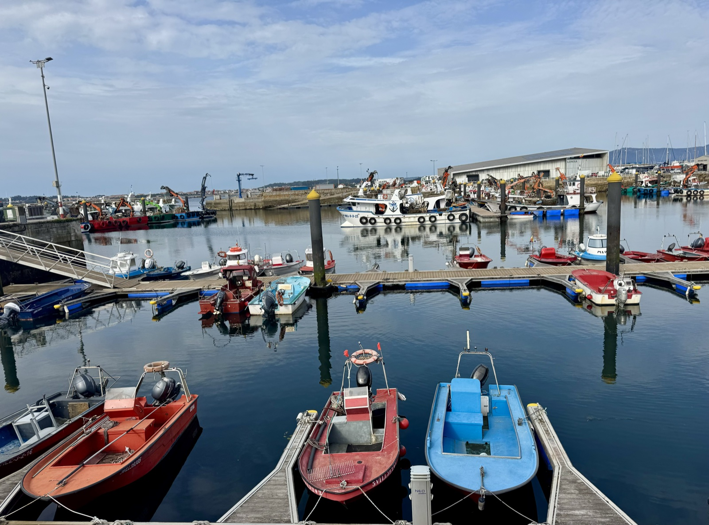

Stage 13: Armenteira to Vilanova de Arousa
Data: 7.35 miles, 423 feet elevation gain, 3 hours moving time, 3:16 total time.
Hotel: Hotel Bradomin
A gentle, quiet walk through rural Armenteira to the seaside village of Vilanova de Arousa through paved roads, dirt paths, forest trails, and a sandy coastline.

A contemplative stop at a simple rural chapel was unexpectedly moving. The traditional hymns playing in the background, wide open doors, flickering candles, and pilgrim messages and offerings made me feel welcome. This is where I lit candles, meditated on the great human beings who inspired me to be adventurous, and sent blessings to my friends and family who’ve had tremendous losses, challenges, and uncertainties. You know who you are…


Acres and acres of grapevines tiered on every mountainside as we neared Vilanova de Arousa. Older vines thick and gnarly wrapped around cement stakes and branched out in both directions, but always towards the sun. Bunches of white, tawny, and red grapes hung like Christmas decorations taunting me to touch, taste, and store the seeds in my pocket. Who wouldn’t want an Alborino grape vine growing in their Cape Cod window?!

Crossing over the bridge into the village, we encountered many friendly and upbeat pilgrims searching for lunch, the nearest albergue, and some tasty cream filled pastries. Buen Caminos echo all day, everywhere, and always sincerely. Pilgrims are kind, helpful, and resourceful wherever you go. The vibe is infectious and is evidenced in kids biking by, tail wagging dogs, and even the purring cats sitting on doorsteps hoping for a snack. Pilgrims genuinely want to help each other, but so do the village people. Although we found Portugal more open and friendly, Spaniards have shown kindness and compassion throughout the past few days. It can not be easy to be in the hotel/restaurant business on a Camiño route.
